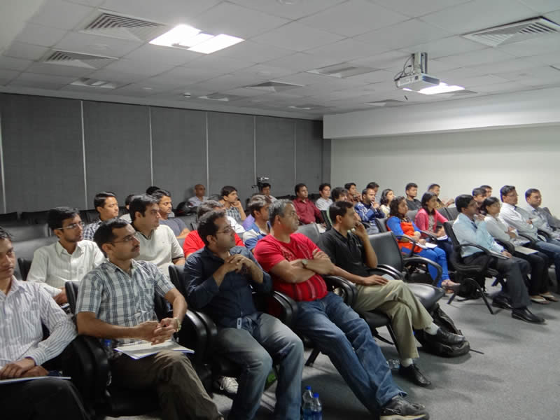
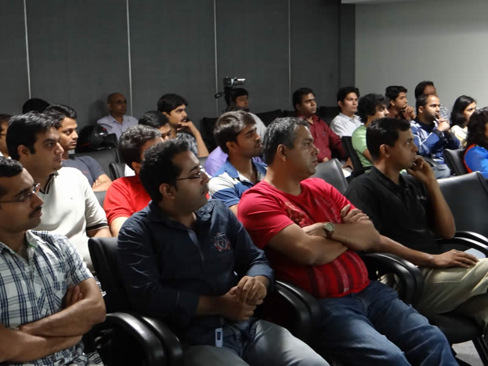
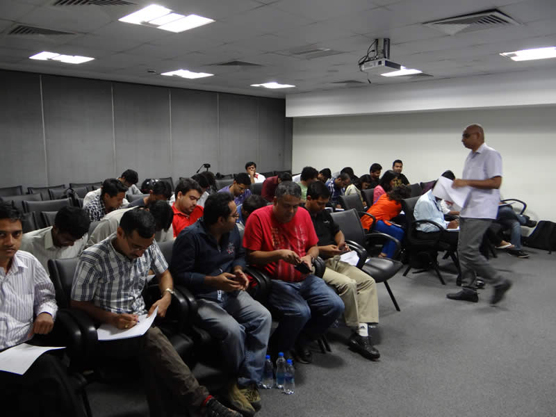

Image Gallery
We managed to get some snaps from this event:

- 
- 

- 
This very first event was conducted on 9th July 2014 at MCCIA, ICC Towers, Pune. It was not a full day event. We started at 9:00 AM and then finished by 1:00 PM. During these four hours we talked about:
We also had guest talk by folks at Omni-bridge and CarIQ. Amit and Pritam (Omni-bridge) talked about UI process workflow. The last, not really front-end topic but but very much related Product design was covered by Sagar and Deepak (CarIQ). They really set the entire classroom on roller coaster ride that we will probably not forget.
Below are the links to presentations and softcopy of the book we distributed in the event:
We managed to get some snaps from this event: